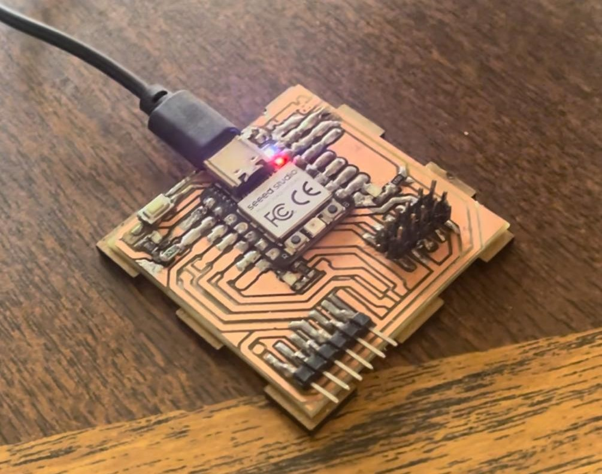
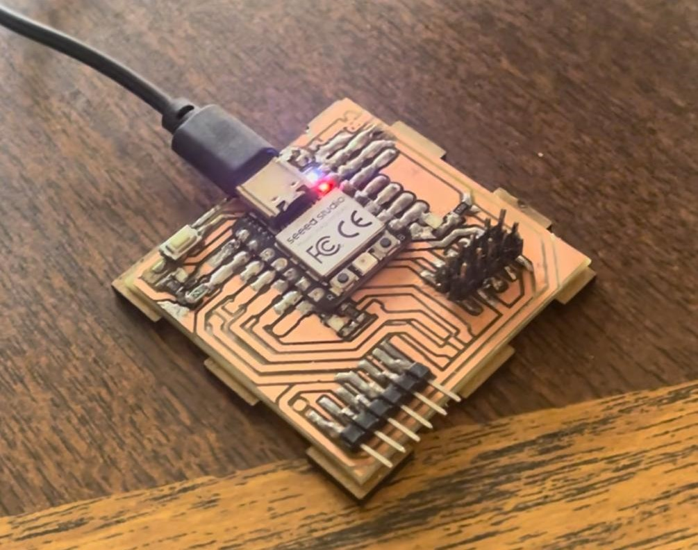
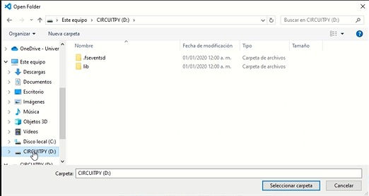
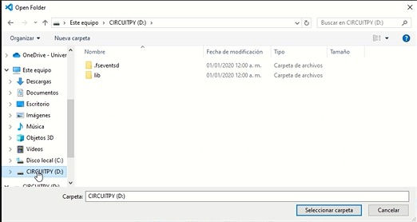

6. Embedded Programming
For this week the assignment was Write a program for a microcontroller development board to interact (with local input &/or output devices) and communicate (with remote wired or wireless devices).
I used the XIAO-RP2040 microcontroller using Python and C++. The FabLab at Ibero Puebla provided us with some codes so that we could compare on our own and determine the programming language we can use. You can find the group assignment page here.
Research
The XIAO-RP2040 microcontroller stands as a versatile and powerful option for embedded system development, offering a blend of performance and flexibility. Powered by the RP2040 microcontroller chip developed by Raspberry Pi, it inherits the robust capabilities of the RP2040 while maintaining a compact form factor suitable for various projects. One of the notable features of the XIAO-RP2040 is its compatibility with popular programming languages such as Python and C++. This broad language support facilitates rapid development and enables users with diverse programming backgrounds to harness the full potential of the microcontroller.

Python, renowned for its simplicity and readability, provides an accessible entry point for beginners and seasoned developers alike. With its rich ecosystem of libraries and frameworks, Python empowers users to efficiently implement a wide range of applications on the XIAO-RP2040, spanning from simple sensor interfacing to complex automation tasks.
On the other hand, C++ offers unparalleled performance and low-level control, making it an ideal choice for projects that demand optimized resource utilization and real-time responsiveness. With C++, developers can harness the full computational capabilities of the XIAO-RP2040, delving into advanced hardware manipulation and system-level programming.

For this task, I used the board created in week 4 , which we can observe its connections with the following image:
 

Code XIAO-RP2040
Programming in Arduino
Arduino is an integrated development environment (IDE) and an open-source hardware platform used for prototyping electronic projects. As programming software, Arduino provides users with a friendly environment to write, compile, and upload code to Arduino microcontroller boards. With a wide range of libraries and a simple syntax based on C/C++, its popularity stems from its accessibility, versatility, and active community of users who share knowledge and projects.
For this part of Arduino programming, I selected the following steps:
First, you must download the following link "//github.com/earlephilhower/arduino-pico/releases/download/global/package_rp2040_index.json" by copying and pasting it into the File -> Preferences section.


Then, in the Select Board section, I pressed "Select other board and port".

I search for the "Seeed XIAO RP2040" microcontroller and make sure to carefully select the correct port to avoid struggling with uploading the program.
For the first part of programming the XIAO-RP2040, I used the blinking of two LEDs and it was programmed with Arduino.
Programming the NEOPIXEL with Arduino
Programming in Python
Python is a high-level, interpreted, and general-purpose programming language known for its clear and readable syntax. As programming software, Python provides developers with a flexible and powerful environment for writing code efficiently and in an easy-to-understand manner. With a wide variety of libraries and modules available, Python is suitable for a range of applications, from web and scientific development to task automation and artificial intelligence. Its popularity stems from its simplicity, versatility, and large developer community that consistently contributes to the growth and evolution of the language.
To upload programming to our XIAO-PR2040, we will connect it using a USB C cable while holding down the bootloader mode, which corresponds to the button labeled with a B.

If done correctly, an administrator for our microcontroller should appear on the computer screen.

Download the following document: adafruit-circuitpython-seeeduino_xiao_rp2040-es-8.2.10.uf2
Paste the file into the window that opened on the microcontroller. Should look like this.

Download and open the Visual Studio Code application. Visual Studio is an integrated development environment (IDE) created by Microsoft. It provides developers with a comprehensive set of tools for building various types of software applications, including web applications, mobile apps, desktop programs, cloud services, and games. Visual Studio supports multiple programming languages, including C#, Visual Basic, C++, Python, and more, and it offers features such as code editing, debugging, version control, and project management. It is widely used by developers around the world due to its robust features, extensive ecosystem, and integration with other Microsoft technologies.
Once the microcontroller is set up in bootloader mode, we can open a folder named CIRCUITPY in the Visual Studio Code program.
 

To program, we chose the file named code.py. Every time I save the file, it executes automatically.
An important mention is that there is a Python extension that helps us analyze the code, detecting possible syntax errors.
Similarly, if you want to open a serial monitor, you need to download the SerialMonitor extension. Serial communication is a method for transferring data between electronic devices by transmitting information sequentially, bit by bit. It is widely used in various applications, from interactions between microcontrollers and sensors to communication between computers and peripherals, due to its simplicity, efficiency, and low resource.
To open the serial monitor tab, you must select this option located in the upper right corner.
Be careful to select the port of the computer and baud rate. where the microcontroller is connected.
Here is an example of how an infinite "Hello world" printout should look in the serial monitor.
Press Ctrl+S to upload the program and start execution.

Now, to add libraries in Python, you need to download the following .zip folder from the following link and decompress.
https://circuitpython.org/librariesBoth in the microcontroller and in the folder that has just been decompressed, you should open their respective "lib" folders. Due to memory limitations on the card, only pass the libraries that you will use in your program.
In this case, since we will be programming something similar to Arduino by changing the colors of the NEOPIXEL LED, we will copy that library to the microcontroller.
Conclusion
After working with both Arduino and Python programming languages, initially Arduino didn't pose much difficulty for me since it's the one I've typically used. However, as I delved further into Python, I realized it's somewhat simpler. The complexity in Python was having to remember to press the button on the microcontroller for bootloader mode labeled with a B.